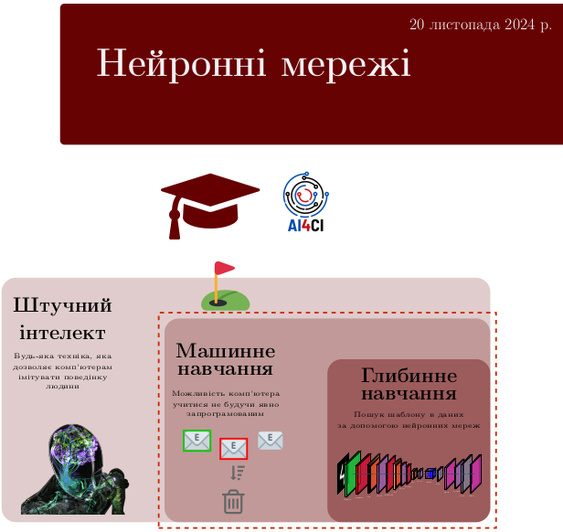

Дослідження
Новини
Підручник «Нейронні мережі»
З радістю повідомляємо про вихід підручника «Нейронні мережі». Це видання стане корисним усім, хто цікавиться штучним інтелектом та сучасними методами машинного навчання.
Підручник містить теоретичні основи нейронних мереж, практичні приклади їх застосування, а також запитання та завдання для самоконтролю. Навчальний матеріал цього видання стане незамінним помічником для студентів та викладачів, що працюють у сфері штучного інтелекту. Підручник доступний в електронному вигляді на безоплатній основі.
Це наше перше видання підручника з штучного інтелекту, і ми усвідомлюємо, що деякі теми могли бути висвітлені не в повній мірі. Ми будемо вдячні за конструктивні зауваження та критику, яка допоможе нам покращити майбутні випуски. Пропозиції щодо наповнення та покращення цього документа, а також повiдомлення про помилки, неточностi надсилайте через github або на електронну пошту: iuriy.kochura@gmail.com.
Ми прагнемо, щоб зміст підручника відповідав найсучаснішим досягненням в галузі штучного інтелекту. У нових випусках ми плануємо додати ще більше теоретичних матеріалів і практичних прикладів, які висвітлюватимуть актуальні тренди. Слідкуйте за новими випусками, щоб бути в курсі останніх оновлень.
|  |
Нейронні мережі Серiя «Штучний iнтелект для iндустрiї». Пiдручник, 2024 Кочура Ю. П., Гордiєнко Ю. Г. |
|---|

Дата публікації: 23 листопада 2024 року.